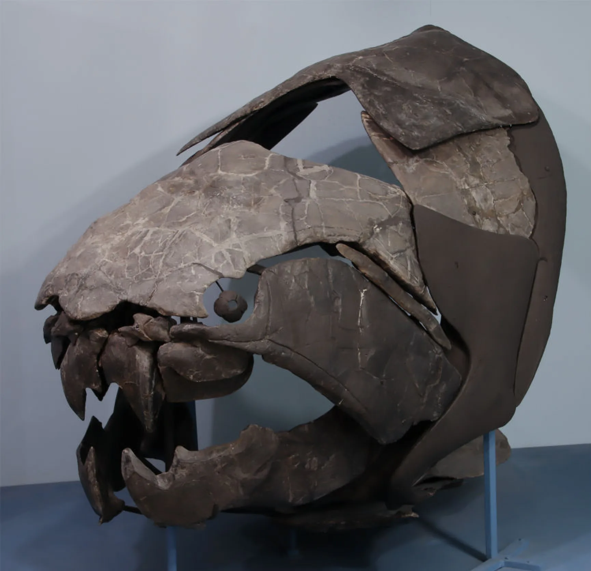
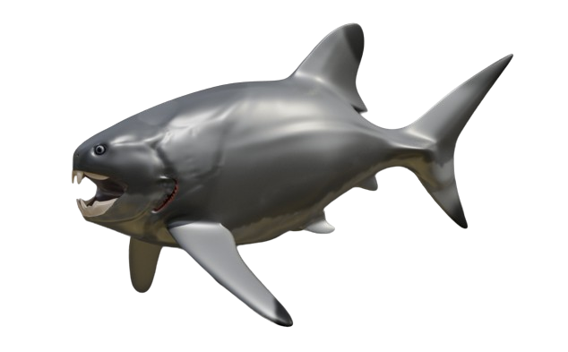

Un poisson cuirassé
Dunkleosteus
Un casque osseux, des lames à la place des dents, et un corps plus court que les anciens monstres de musée.
Fossile : Russell K. Engelman, CC BY-SA 4.0, via Wikimedia Commons. Le crâne et l’armure du ventre sont vrais. Certaines plaques latérales sont reconstruites. Page du fossile

Il n’y a pas de film de cet animal fait pour ce site. L’image derrière le titre est l’armure fossile. Le dessin de l’animal vivant ne fait que 634 pixels de large, donc cette page ne l’étire pas derrière le titre.
Ce que l’on sait
- Avant que les animaux à pattes soient courants, les mers avaient des chasseurs cuirassés. Dunkleosteus, du schiste sous Cleveland, portait un casque osseux et des lames de mâchoire qui s’aiguisaient, à la place des dents. L’âge retenu sur la pièce du schiste de Cleveland de ce site est d’environ 360 millions d’années, vers la fin du Dévonien.
- La photographie est le crâne CMNH 5768, au Cleveland Museum of Natural History. Le crâne et l’armure du ventre sont vrais. Certaines plaques latérales sont reconstruites. Page du fossile Engelman, 2024
- Engelman, 2024, donne environ 3,0 à 3,4 mètres pour les subadultes et les adultes typiques, et environ 4,1 mètres pour les plus grands, d’après la méthode de son étude de 2023. Le même article dit que des longueurs un peu plus hautes, environ 3,8 et 4,5 mètres, restent possibles, et que les anciennes images d’un poisson de 8 à 10 mètres ne tiennent pas. Le corps derrière l’armure est mal connu, donc ce sont des estimations, pas un mètre ruban.
- Le petit dessin est un concept d’artiste de ce poisson plus court. Ce n’est pas une photographie. Le fichier fait 634 pixels de large, et cette page ne l’agrandit pas. Page du dessin
.png){kind=link}
Ce que cette page ne dit pas
- Une estimation d’environ 3 à 3,4 mètres pour un adulte typique est plus longue qu’une personne. Cette page ne dessine pas une personne à côté du poisson, parce que la longueur est une estimation et que la queue est mal connue.
- L’épingle est le ruisseau Doan, à Cleveland, le ruisseau qui a donné son nom au schiste. L’armure a été trouvée dans ce schiste sous la ville et dans les comtés voisins, pas dans un seul trou. Le repère a été fait pour ce site. Créé par le fondateur et SI.

Sources (3)
- Engelman, 2024, Palaeontologia Electronica
- Wikimedia Commons — le crâne CMNH 5768, CC BY-SA 4.0
- Wikimedia Commons — le dessin de 2024, CC BY 4.0